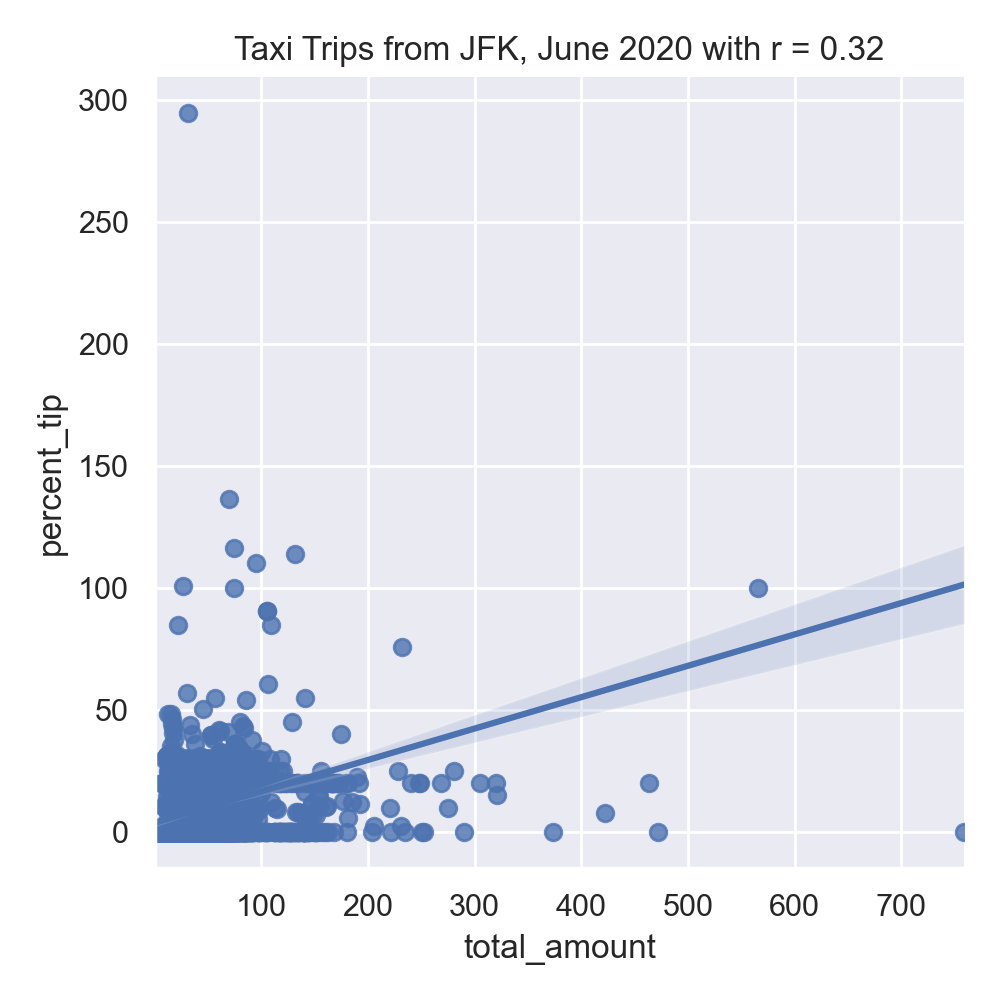
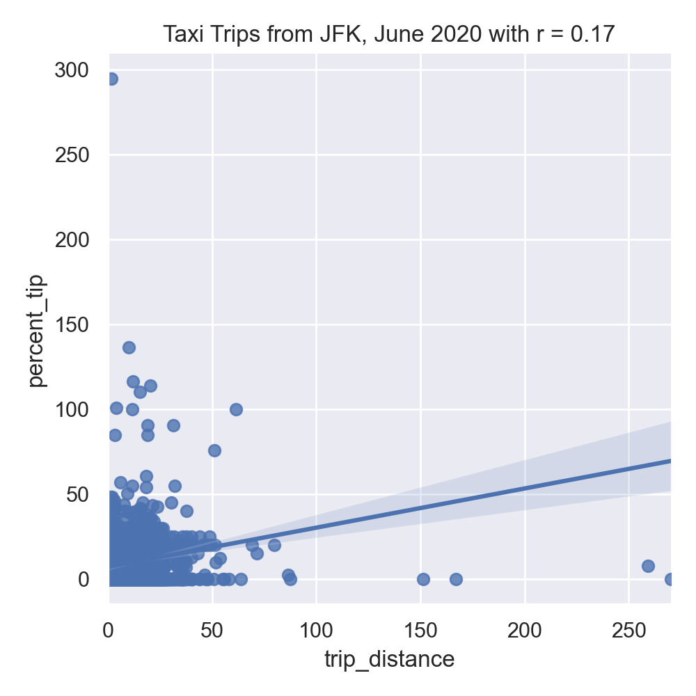

Program 9: Logistic Taxi
CSci 39542: Introduction to Data Science
Department of Computer Science
Hunter College, City University of New York
Spring 2022
Classwork Quizzes Homework Project
Program Description
Program 9: Logistic Taxis. Due noon, Thursday, 7 April.
As in Program 8, this program is tailored to the NYC OpenData Yellow Taxi Trip Data and follows standard strategy for data cleaning and model building of:
The function specifications are below:
In your program, include the following functions from Program 8. You may use your earlier function or the Program 8 solution available on Blackboard:
For example, let's start by setting up a DataFrame, as we did in Program 8, with the file, taxi_jfk_june2020.csv, add in the tip and time features, and imputing missing values for
Make plots duration vs. distance and cross_boro vs. paid_toll
The resulting images:


Make a scatter plot of distace versus paid_toll:
The resulting images:
Can we predict when someone pays a toll. Note that paying a toll suggests crossing borough but not necessarily the reverse:
Build logistic model, wo Regularization and with regularization. Then save models as pkl files to use/compare for later. Do similar analysis with multiple inputs.
Let's build a more complicated model that uses multiple inputs, including the numerical columns:
With the missing numeric data imputed, we can fit the model on training sets (of size 25%):
the resulting model does a reasonable both with the training and testing data sets that we used to validate the model:
We can use the model for other yellow taxi data sets to see how well our model does:
The root mean squared error is higher, but still a reasonable fit:
Do we need 25% of the data for training? Let's try with just 10% of the data and see how well the model does on the training and testing data:
Lastly, we can use quadratic features to build a model:
the resulting model produces the following parameters and does very well with the training data, but not as well on validation:
Learning Objective: to train and validate models, given quantitative and qualitative data, as well as assessing model quality.
Available Libraries: pandas, datetime, pickle, sklearn, and core Python 3.6+.
Data Sources: Yellow Taxi Trip Data and NYC Taxi Zones from OpenData NYC.
Sample Datasets: taxi_new_years_day_2020.csv,
taxi_4July2020.csv,
taxi_jfk_june2020.csv, and
taxi_zones.csv.

To identify which trips are most likely to pay tolls, this program will focus on building a logistic regression model on both the categorical and numerical features of our dataset.
And write the following new functions:
import_data(file_name) -> pd.DataFrame:
This function takes as one input parameter:
The data in the file is read into a DataFrame, and the resulting DataFrame is returned. file_name: the name of a CSV file containing Yellow Taxi Trip Data from OpenData NYC.
(Note this is identical to the function with the same name in Program 8. You may use your earlier function or the Program 8 solution available on Blackboard.)
add_tip_time_features(df) -> pd.DataFrame:
This function takes one input:
The function computes 3 new columns:
df: a DataFrame containing Yellow Taxi Trip Data from OpenData NYC.
The original DataFrame with these additional three columns is returned.
percent_tip: which is 100*tip_amount/(total_amount-tip_amount)
duration: the time the trip took in seconds.
dayofweek: the day of the week that the trip started, represented as 0 for Monday, 1 for Tuesday, ... 6 for Sunday.
(Note this is identical to the function with the same name in Program 8. You may use your earlier function or the Program 8 solution available on Blackboard.)
impute_numeric_cols(df, x_num_cols) -> pd.DataFrame:
This function takes two inputs:
Missing data in the columns df: a DataFrame containing Yellow Taxi Trip Data from OpenData NYC.
x_num_cols: a list of numerical columns in df.
x_num_cols are replaced with the median of the column. Returns a DataFrame containing only the imputed numerical columns from input df.
(Note this is identical to the function with the same name in Program 8. You may use your earlier function or the Program 8 solution available on Blackboard.)
add_boro(df, file_name) -> pd.DataFrame:
This function takes as two input parameters:
Makes a DataFrame, using df: a DataFrame containing Yellow Taxi Trip Data from OpenData NYC.
file_name: the name of a CSV file containing NYC Taxi Zones from OpenData NYC.
file_name, to add pick up and drop off boroughs to df.
In particular, adds two new columns to the df:
Returns PU_borough that contain the borough corresponding to the pick up taxi zone ID (stored in PULocationID), and
DO_borough that contain the borough corresponding to the drop off taxi zone (stored in DOLocationID)
df with these two additional columns (PU_borough and DO_borough).
add_flags(df) -> pd.DataFrame:
This function takes one input parameter:
Adds two new columns:
df: a DataFrame containing Yellow Taxi Trip Data from OpenData NYC to which add_boro() has been applied.
Returns paid_toll which is 1 if a toll was paid on the trip and 0 in no tolls were paid.
cross_boro which is 1 if the trip started and ended in different borough, and 0 if the trip started and ended in the same borough.
df with these two additional columns (paid_toll and cross_boro)
encode_categorical_cols(df) -> pd.DataFrame:
This function takes one input parameter:
Apply to the borough columns... df: a DataFrame containing Yellow Taxi Trip Data from OpenData NYC to which add_boro() has been applied.
PU_borough and DO_borough Check for naming convention of get_dummies
One hot encode categorical columns, remove first variable, to get k-1 dummies out of k categorical levels
:param df_cat_imputed: pandas dataframe, output of impute_categorical_cols()
:return: pandas dataframe containing the one hot encoded categorical dataframe
split_test_train(df, y_col_name, df_cat_encoded, df_num_imputed, df_num_transformed,
test_size=0.25, random_state=12345) -> Union[pd.DataFrame, pd.Series()]:
This function takes ??? input parameter:
df: a DataFrame containing Yellow Taxi Trip Data from OpenData NYC to which add_boro() has been applied.
y_col_name:
df_cat_encoded:
df_num_imputed:
df_num_transformed:
test_size:
random_state:
fit_logistic_regression(x_train, y_train,regularization='none'):
This function takes three input parameter:
Fits a logistic regression model to the x_train: .
y_train: .
regularization: .
x_train and
y_train data, using the logistic model from sklearn.linear_model. The model should use the solver = 'saga' to allow all the options for regularization (called penalty as the option to the model) be any of 'elasticnet', 'l1', 'l2', and 'none'). The resulting model should be returned as bytestream, using pickle.
predict_using_trained_model(mod_pkl, x, y):
This function takes three inputs:
Computes and returns the mean squared error and r2 score between the values predicted by the model (mod_pkl: a trained model for the data, stored in pickle format.
x: an array or DataFrame of numeric columns with no null values.
y: an array or DataFrame of numeric columns with no null values.
mod on x) and the actual values (y). Note that sklearn.metrics contains two functions that may be of use: mean_squared_error and r2_score.
passenger_count:
Next, let's use our new functions to add in boroughs for the pick up and drop off locations, as well as the indicators for if a toll was paid and if the trip started and ended in different boroughs:
df = import_data('taxi_jfk_june2020.csv')
df = add_tip_time_features(df)
df['passenger_count'] = impute_numeric_cols(df,['passenger_count'])
prints:
df = df.add_flags(df)
SHOULD we split encode_categorical_cols-- split into pieces?
#Explore some data:
import matplotlib.pyplot as plt
import seaborn as sns
sns.set_theme(color_codes=True)
sns.lmplot(x="total_amount", y="percent_tip", data=df)
tot_r = df['total_amount'].corr(df['percent_tip'])
plt.title(f'Taxi Trips from JFK, June 2020 with r = {tot_r:.2f}')
plt.tight_layout() #for nicer margins
plt.show()
sns.lmplot(x="trip_distance", y="percent_tip", data=df)
dist_r = df['trip_distance'].corr(df['percent_tip'])
plt.title(f'Taxi Trips from JFK, June 2020 with r = {dist_r:.2f}')
plt.tight_layout() #for nicer margins
plt.show()#Explore some data:
import matplotlib.pyplot as plt
import seaborn as sns
sns.set_theme(color_codes=True)
sns.lmplot(x="total_amount", y="percent_tip", data=df)
tot_r = df['total_amount'].corr(df['percent_tip'])
plt.title(f'Taxi Trips from JFK, June 2020 with r = {tot_r:.2f}')
plt.tight_layout() #for nicer margins
plt.show()
sns.lmplot(x="trip_distance", y="percent_tip", data=df)
dist_r = df['trip_distance'].corr(df['percent_tip'])
plt.title(f'Taxi Trips from JFK, June 2020 with r = {dist_r:.2f}')
plt.tight_layout() #for nicer margins
plt.show()